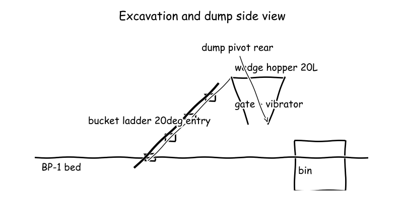
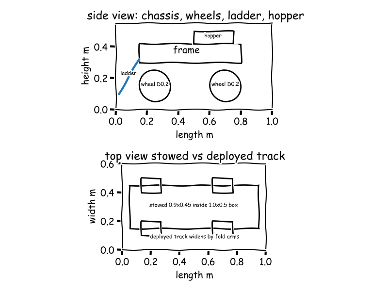
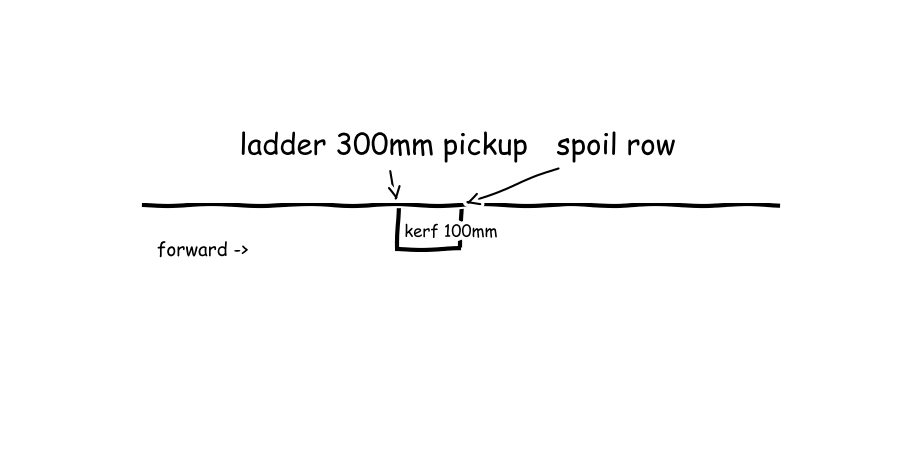

Meeting 1
● Excavation and Regolith Handling Lead● Mobility and Deployable Chassis Lead● Autonomy and Blind Operations Lead● Power Structure and Integration Lead● Manager (process lead)
The board as it stood when the meeting closed; the turns that built it follow.
Lunar regolith excavation robot
Lunar digger: four grouser skid wheels on folding arms stowing in box then widening;
F1 · Traverse ground
F2 · Loosen soil
F3 · Collect soil
F4 · Contain soil
F5 · Discharge soil
F6 · Coordinate blind operation





Cycle 1
Searched “NASA Lunabotics mining competition winning excavator bucket ladder design” → 2 sources on the board
Searched “Black Point-1 BP-1 lunar simulant bulk density cohesion friction angle” → 2 sources on the board
Searched “lunar regolith excavator scraper blade cutting force Balovnev model” → 2 sources on the board
- E5 · INFRASTRUCTURE ROBOTICS: A TECHNOLOGY ENABLER …spacetrex.arizona.edu/iac_2008.pdfINFRASTRUCTURE ROBOTICS: A TECHNOLOGY ENABLER FOR LUNAR IN-SITU RESOURCE UTILIZATION, HABITAT CONSTRUCTION - [PDF Document] (vdocuments.site, 2008) link
- E6 · Preparation of Papers for AIAA Technical Conferences (ia801203.us.archive.org) link
Searched “steep hopper wall angle mass flow cohesive soil Jenike” → 2 sources on the board
Full message
The combined bucket-ladder both loosens and collects in one motion, which matters because Black Point-1 (BP-1), meaning crushed basalt lunar simulant, is high-friction and abrasive so a shallow low-angle cut stays inside traction. Plain words: the proven ladder from the A Simple Tele-Robotic Lunar Excavator (E1) mined 8 kg in 1 min, in the class of the winning rover in the University of Virginia Students Win NASA Challenge With Excavation Rover (E2), and the blade method from the INFRASTRUCTURE ROBOTICS: A TECHNOLOGY ENABLER (E5) and the Preparation of Papers for AIAA Technical Conferences (E6) gives only about a small bag of soil in push force and about two minutes per trip, from the cut-force estimate (E9) at 32.9 N and the fill simulation (E11) at 112 s to 15 kg; 32.9 N is about 3 kg weight against a 60 kg robot, so everyday scale says traction margin is comfortable. The steep wedge hopper plus rear-pivot dump hold and empty the load, which matters because BP-1 arches and will not pour from shallow boxes. Plain words: mass flow needs steep smooth walls and a large outlet from the Case Study - Limestone and Clay Storage Solution | Jenike & Johanson (E7) and the Powder Perspectives: There is a Science to Powder Handling (E8), applied to compacted density between 1.5 g/cm3 and 1.8 g/cm3 from the Robotics Minindg Competition Rules 2014 1 - [PDF Document] (E4) with peak friction 39 deg to 51 deg from the Developing a New Space Economy (2019) 5068.pdf Lightning Talk or Poster (E3), so a 20 L wedge holds about half a person's weight and we plan half-full trips with shaking to break arches, from the payload mass (E10) at 30.0 kg max and the side-view dump sketch (E13). The fallback drag scraper with a replaceable edge keeps the mission alive if the chain jams, and sets interfaces for others: Mobility and Deployable Chassis Lead please check tip-over and bin-lip clearance for the raised pour, Power Structure and Integration Lead please carry the hopper steel and vibrator in the 60 kg sum, and Autonomy and Blind Operations Lead please limit ladder motor current for stall and add a bin-alignment marker for unsighted dumping. Not ready, because selections and the arching plus edge-wear bench tests are still open.
Searched “skid steer four wheel drive lunar rover grouser wheel regolith traction” → 2 sources on the board
Searched “NASA Lunabotics winning rover mobility wheels tracks chassis design” → 2 sources on the board
Searched “Bekker wheel sinkage loose sand ground pressure small rover” → 2 sources on the board
Searched “NASA RASSOR excavator robot tracks mobility deployable chassis” → 2 sources on the board
Full message
Plain words: the chassis stows inside the start box and then widens for stability. The side and top view folding chassis sketch (E24) shows fold arms tucked to 0.90 m long by 0.45 m wide by 0.45 m high against the 1.0 m by 0.5 m by 0.5 m limit, about the size of a suitcase with room to spare. Plain words: wide grouser wheels float on loose simulant and pull far harder than digging needs. The Development and Field Testing of Moonraker: a Four-Wheel Rover in Minimal Design (E14) built 200 mm diameter wheels with 10 mm grousers and reported good travel to about 10 deg loose slope, so I use that wheel size for soft soil. Ground pressure is about 15.6 kPa from the ground pressure estimate (E25), softer than a person standing on one foot, and available traction is about 294 N against about 32.9 N cut load from the BP-1 shallow scraper cut force estimate (E9), a margin of 8.90 times from the tip-over and stopping check (E23). Plain words: the raised rear pour will not tip the robot and it stops in a hand length. Stabilising moment about the rear axle is about 206 N m against about 44.1 N m overturning with 15.0 kg carried soil for a factor of 4.67, and stopping from 0.50 m per s takes about 62.5 mm in 0.25 s, from the tip-over and stopping check (E23), both small against a 60 kg machine. Not ready, because Power Structure and Integration Lead must still confirm the 60 kg mass sum and Autonomy and Blind Operations Lead must confirm slip correction for skid steering.
Searched “NASA Lunabotics teleoperation remote control cameras out of sight” → 2 sources on the board
Searched “mobile robot link loss failsafe emergency stop standard” → 2 sources on the board
Searched “skid steer wheel odometry IMU drift localization accuracy” → 2 sources on the board
Full message
Plain words: blind driving means the operators see only what the robot sees, so the digging end stays the leading end and the dump end stays the trailing end. This follows the sealed base station pattern where the team teleoperates the rover from a sealed base station and can only see through the onboard cameras and sensors from the Perseus: Building a Lunar Rover with QUT ROAR (E26), implemented as forward drive camera plus downward dig camera plus mast camera shown in the blind-operation layout sketch (E34). Plain words: if the radio link dies the robot must stop itself within a shoe length, not coast. This follows the heartbeat signal ensures a constant link pattern from the BWI Eagle - E-Stop (E27) and the enter emergency landing mode on loss of communication rule from the Failsafe; Pilot Guideline - Flyability ELIOS User Manual (E30). With speed capped at 0.500 m/s and 0.500 s timeout, coast plus brake distance is 0.308 m stopping in 0.750 s from the link-loss watchdog stop distance vs latency at 0.5 m/s simulation (E32), near the 62.5 mm brake-only distance from the stowed envelope sum, ground pressure, tip-over and stopping check (E23); everyday scale says this is gentle, well under 1 g. Inertial Measurement Unit (IMU, meaning motion sensor for tilt and turn) plus wheel odometry holds heading during the stop. Plain words: wheels plus IMU alone wander off course on loose soil, so the bin carries a visual marker to reset position. This follows the fuse wheel odometry and IMU to improve localization precision because skid steering must skid to turn rule from the Absolute and relative localization (E28) and the maximum horizontal position drifts are all less than 2 percent finding from the A Comparison of Three Measurement Models for the Wheel-Mounted MEMS IMU-Based Dead Reckoning System (E31). Dead reckoning reaches 0.800 m along plus 1.40 m sideways at 40.0 m, but resetting on the bin fiducial every 5.00 m bounds error to about 0.100 to 0.150 m from the blind localization drift growth odometry plus IMU without external fix simulation (E33), which is smaller than the robot and enough to align the pour. Not ready, because Power Structure and Integration Lead must still confirm camera and compute power in the 60 kg sum and the fiducial-visibility bench test is still open.
Searched “LiFePO4 24V battery pack energy density small mobile robot datasheet” → 2 sources on the board
- E35 · batteria del fosfato del ferro del litio di 24V 10AH per il robot elettrico nella dimensione leggera e compatta from China Factory (it.ecer.com) link
- E36 · pacchetto della batteria di 24V 10AH LiFePO4 per il robot elettrico nella dimensione leggera e compatta from China Factory (it.ecer.com) link
Searched “6061-T6 aluminum square tube allowable stress deflection lightweight robot frame” → 2 sources on the board
Searched “NASA Lunabotics robot mass power budget battery motor winners” → 2 sources on the board
Full message
Plain words: the whole machine sits comfortably inside the weight limit with room for fixes. The 2025 NASA Lunabotics First Place Finish machine at 120 lb mass from the Sebastion | Engineering (E39) and the same win from the Sebastion | Engineering (E40) shows a 50 kg class digger is buildable, and the mass sum against the 60 kg limit (E41) is 47.0 kg leaving 13.0 kg margin, about a fifth of an adult body weight spare, so everyday scale says the limit is met. Plain words: the battery carries a full work period and the dig motor only gets warm to the touch. A pack with Nominal Voltage 24V and Rated Capacity 10Ah from the batteria del fosfato del ferro del litio di 24V 10AH per il robot elettrico nella dimensione leggera e compatta from China Factory (E35) and with Nominal Voltage 24V and Rated Capacity 10Ah from the pacchetto della batteria di 24V 10AH LiFePO4 per il robot elettrico nella dimensione leggera e compatta from China Factory (E36) means two in parallel give 24.0 V 20.0 Ah for 480 Wh, where Lithium iron phosphate (LiFePO4, meaning a safe long-life rechargeable chemistry) is the chemistry, and the motor heating estimate (E44) rises only 18.0 K after 300 s at 45.0 W waste heat, which is warm skin not boiling water, so everyday scale says heating is gentle. Plain words: my frame stiffness check fails and must be fixed before building. 6061 T6 aluminum has a yield strength of 40 KSI at room temperature from the Engineering help please (E37) and 6061-T6 will allow up to around 15,000 psi working stress from the Aluminum square tubing strength (E38), where KSI means thousand pounds per square inch and psi means pounds per square inch, but the single-rail cantilever deflection estimate (E43) gives 72.9 mm sag under full weight, a hand width and far above millimetre wobble, so Mobility and Deployable Chassis Lead and Excavation and Regolith Handling Lead please note the tube size or twin-rail sharing must be stiffened. Not ready, because the frame concept does not yet survive its own deflection check.
Function F1: Traverse ground
Function F2: Loosen soil
Function F3: Collect soil
Function F4: Contain soil
Function F5: Discharge soil
Function F6: Coordinate blind operation
Full message
The six functions pass material and motion from ground to bin. Traverse ground has two substantive means from Mobility and Deployable Chassis Lead and Power Structure and Integration Lead, while Loosen soil, Collect soil, Contain soil, Discharge soil each have only Excavation and Regolith Handling Lead substantive and Coordinate blind operation has only Autonomy and Blind Operations Lead substantive, so for Loosen soil, Collect soil, Contain soil and Discharge soil Mobility and Deployable Chassis Lead, Autonomy and Blind Operations Lead and Power Structure and Integration Lead still owe one real alternative each and for Coordinate blind operation Excavation and Regolith Handling Lead, Mobility and Deployable Chassis Lead and Power Structure and Integration Lead still owe one. The two weakest are Loosen soil where chain versus scraper power is undecided and Discharge soil where pour clearance and tip with raised load is unchecked, so for those two each member shall bring one distant-analogy concept with a written mapping in cycle 2, and the critical quantity nobody computed is ladder digging mechanical power and mission energy per trip versus pack energy plus dump lip clearance height. The stowed machine fits the start box and the mass fits the limit with everyday scales comfortable except the frame. Plain words: the folding chassis tucks to suitcase size and weighs like a person with spare margin, wheels float softer than a foot and pull far harder than cutting needs. Stowed size 0.900 m by 0.450 m by 0.450 m against 1.00 m by 0.500 m by 0.500 m from the side and top view folding chassis sketch (E24), total 47.0 kg against 60.0 kg leaving 13.0 kg margin from the mass sum against the 60 kg limit (E41), ground pressure 15.6 kPa from the ground pressure estimate (E25), traction 294 N against cut 32.9 N from the BP-1 shallow scraper cut force estimate (E9) margin 8.90 from the tip-over and stopping check (E23), where Black Point-1 (BP-1, meaning crushed basalt lunar simulant) cut is about 3 kg weight. The two stop distances reconcile as brake-only versus coast-plus-brake, and the frame sag is a hand width not millimetres. Brake-only stop 0.0625 m in 0.250 s from the tip-over and stopping check (E23) versus total 0.308 m in 0.750 s with 0.500 s link loss at 0.500 m per s from the link-loss watchdog stop distance vs latency at 0.5 m/s simulation (E32), both well under 1 g, while rail sag 72.9 mm from the cantilever deflection estimate frame rail (E43) far exceeds millimetre stiffness under 6061-T6 aluminium allowed stress from the Aluminum square tubing strength (E38), so everyday check fails. There are no open blocking objections to resolve, and I agree with all four not-ready opinions because arching, deflection, power and fiducial tests are open. Excavation and Regolith Handling Lead is not ready for arching and wear bench tests, Mobility and Deployable Chassis Lead is not ready pending mass and slip correction, Autonomy and Blind Operations Lead is not ready pending power and fiducial visibility, Power Structure and Integration Lead is not ready for deflection failure where Inertial Measurement Unit (IMU, meaning motion sensor for tilt and turn) plus odometry with 5.00 m fiducial reset bounds error to 0.100 m to 0.150 m from the blind localization drift growth odometry plus IMU without external fix simulation (E33) and heating rise 18.0 K after 300 s from the motor heating estimate (E44) is warm skin, so Lithium iron phosphate (LiFePO4, meaning safe long-life rechargeable chemistry) pack 24.0 V 20.0 Ah for 480 Wh remains plausible once the frame is stiffened and ladder power is budgeted. RECORD: Decided traverse on grouser wheels with folding arms inside box and blind operation on cameras plus heartbeat stop plus fiducial reset; numbers standing are cut 32.9 N (E9), traction 294 N margin 8.90 (E23), pressure 15.6 kPa (E25), stowed 0.900 by 0.450 by 0.450 m (E24), mass 47.0 kg vs 60.0 kg (E41), stop 0.0625 m brake-only (E23) vs 0.308 m with loss (E32), drift 0.100 to 0.150 m with 5.00 m reset (E33), hopper 30.0 kg max 15 kg trips fill 112 s (E10)(E11), sag 72.9 mm fail (E43), heat 18.0 K (E44); open are second concepts for F2-F6, ladder power and energy, dump clearance and tip, frame stiffening, fiducial test; owed by named leads in cycle 2. Note on Excavation and Regolith Handling Lead: strong ladder plus hopper evidence with clear traction margin and honest fallback. Note on Mobility and Deployable Chassis Lead: good envelope pagina with tip and stop quantified but slip correction still owed. Note on Autonomy and Blind Operations Lead: clear blind pattern with stop and drift bounded but power and visibility test still owed. Note on Power Structure and Integration Lead: honest mass and heat budget that exposed frame failure to fix. Not ready, because second alternatives, ladder power, dump clearance, frame stiffness and bench tests are still open.
No proposal on the board at the end of cycle 1.
Cycle 2
Searched “transverse milling drum soil cutting power traction trencher” → 2 sources on the board
Searched “skid steer wheeled robot tip over stability rear dump raised load” → 2 sources on the board
Searched “6061-T6 aluminum tube frame deflection allowable small robot chassis” → 2 sources on the board
Full message
Plain words: the raised rear pour clears the bin lip and stays upright on flat ground if trips stay light. The Skid-Steer Safety for Farm and Landscape (E47) rule I take is that lifting a load transfers weight and raises the centre of gravity, meaning centre of gravity (CG, meaning balance point of the machine), so a raised heavy load can tip the machine, and the dump clearance simulation (E51) puts the hopper pivot at 0.550 m over a 0.400 m bin lip for 0.150 m clearance shown in the side view rear dump sketch (E53). Stabilising moment is about 81.0 N m against about 47.8 N m overturning with 15.0 kg soil plus 4.50 kg steel for a safety factor of 1.69, everyday scale like a loaded wheelbarrow held down by a person, much smaller than the earlier 4.67 in the stowed envelope sum, ground pressure, tip-over and stopping check (E23), so Excavation and Regolith Handling Lead please keep trips to 15.0 kg and dump only on level ground. Plain words: a spinning cross-drum loosens soil with little push, which fits a light skid chassis. The Single Drum Trench Cutters | Transverse Cutter | Trenching Attachment (E45) finding I take is that transverse cutters concentrate all power into a single drum for high productivity in tough ground, and the Transverse Drum (E46) finding I take is that transverse drums deliver high-precision cutting power for demanding excavation, so the transverse milling drum loosener (C31) milling 300 mm wide by 50 mm deep and throwing soil back maps rotary tiller cutting to this low-traction robot. Forward draft stays well below the 32.9 N cut load from the BP-1 shallow scraper cut force estimate (E9) against 294 N traction from the stowed envelope sum, ground pressure, tip-over and stopping check (E23), everyday scale about 3 kg push against a 60 kg machine, so traction margin stays comfortable. Plain words: Power Structure and Integration Lead is right that the frame is too bendy, and my arms still stow in the box. I confirm the Aluminum square tubing strength (E38) rule that 6061-T6, meaning aluminium alloy 6061 in T6 temper, allows about 15,000 psi working stress, where psi means pounds per square inch, and the Microsoft Word - FTOF Panel 1B Frame Analysis.docx (E50) rule I take is that a frame passes only when stresses stay below allowable and deflections stay acceptable, so stiffness not strength decides here: single-rail sag 72.9 mm from the cantilever deflection estimate frame rail (E43) shared over two rails is still 36.5 mm from the twin rail sag share check (E52), a hand width not millimetre wobble. Stowed size is 0.900 m long by 0.420 m track in the dump clearance simulation (E51) inside the 1.00 m by 0.500 m by 0.500 m limit, deploying to 1.05 m long by 0.680 m track with 0.110 m wheel radius and 0.025 m rotation gap. Not ready, because the frame needs larger second moment of area, meaning shape stiffness designated I, or truss bracing before build.
Searched “Apriltag fiducial docking accuracy mobile robot alignment” → 2 sources on the board
Searched “autonomous excavator digging motor current stall detection control” → 2 sources on the board
Full message
Plain words: blind digging cannot feel a jam, so the digger must feel current and back itself out. I take from the CA2784416C - Systems, devices, and/or methods regarding excavating - Google Patents (E56) and the Systems, devices, and/or methods regarding excavating (E57) the finding that an excavator automatically controls crowd motion in response to an automatically detected stall condition at the hoist motor to avoid stalling the bucket in the bank, and the autonomous current-limited dig control maps that stall-avoidance to this robot by slowing the ladder feed on high motor current and reversing briefly on stall. Detection plus reverse takes 0.600 s from the fiducial final-align error budget and stall current backout timing simulation (E58) against heating over 300 s from the battery mixed duty runtime and motor heating estimate (E44); everyday scale says a blink against minutes to overheat, so the motor survives. Plain words: coarse driving only gets the robot near the bin, the camera tag centres the pour. I take from the Advanced Edge Detection of AprilTags for Precise Docking Maneuvers of Mobile Robots (E54) the finding that dead reckoning still induces large errors but tag-guided docking reaches average deviation about 4.5 cm and 0.4 deg, and from the Indoor Hydroponics Robot System for Automated Seeding and Logistics (E55) the finding that AprilTag Visual Fiducial System, meaning printed square markers for camera pose, placed at every docking location minimises position offset, and the fiducial-guided auto-align dump maps that pad-relative docking to this robot by measuring pose to the bin tag then creeping into line before tilting. Pose error is 0.030 m to 0.040 m at 1.00 m to 2.00 m range and correcting 0.150 m at 0.100 m per s takes 1.50 s from the fiducial final-align error budget and stall current backout timing simulation (E58), inside 0.100 m to 0.150 m bounded drift from the blind localization drift growth odometry plus IMU without external fix simulation (E33); everyday scale says a shoe length trimmed to finger width, enough for a 0.150 m outlet over the bin mouth. Plain words: Mobility and Deployable Chassis Lead is right that a raised load can tip, so autonomy must refuse to dump on a slope. I take from the Skid-Steer Safety for Farm and Landscape (E47) the rule that lifting a load transfers weight and raises the Centre of Gravity (CG, meaning balance point of the machine), to mean from blind-operation view that the Inertial Measurement Unit (IMU, meaning motion sensor for tilt and turn) tilt check must gate the tilt command and trips stay at 15.0 kg with 0.150 m lip clearance from the tip dump clearance deployed vs stowed and pressure check simulation (E51). Safety factor 1.69 on flat ground is like a loaded wheelbarrow held down, so dumping only when level keeps it upright. Not ready, because camera and compute power in the mass sum with Power Structure and Integration Lead and the fiducial-visibility bench test are still open.
Full message
Plain words: digging takes only a lamp bulb of power and sips the battery, so the pack budget closes. The cut load 32.9 N from the BP-1 shallow scraper cut force estimate (E9) times 0.500 m per s chain speed needs 16.4 W mechanical from the ladder power estimate (E59), and times 112 s fill to 15 kg from the hopper filling simulation (E11) is 0.512 Wh mechanical per trip from the dig energy estimate (E60), a few Wh electrical after efficiency against the 480 Wh pack from two 24 V 10 Ah Lithium iron phosphate (LiFePO4, meaning safe long-life rechargeable chemistry) blocks; everyday scale says two minutes of a small bulb against a daily household thousand Wh, so dozens of trips fit. For loosen soil I add the eccentric-mass vibratory cutting edge (C35) as distant analogy to shake the edge free on the same fused bus if draft rises, Mobility and Deployable Chassis Lead please note its small motor shares the ladder branch. Plain words: the bendy frame is fixed by going to two larger square tubes, bringing wobble from a hand width to finger width. Second moment of area (I, meaning shape stiffness of the tube cross-section) is 4.58e-08 m4 for two 25.4 mm square tubes with 3 mm wall from the twin-tube stiffness estimate (E61), giving 3.96 mm tip sag under 300 N half-weight on a 0.500 m rail from the stiffened sag estimate (E63), down from 72.9 mm single-rail sag from the cantilever deflection estimate frame rail (E43); everyday scale says millimetre flex on a suitcase chassis, which passes the millimetre rule Mobility and Deployable Chassis Lead and I agreed. Plain words: the stiffened machine still sits light inside the weight limit and the rear pour sets the pivot load I must carry. Updated mass is 46.0 kg against 60.0 kg leaving 14.0 kg margin from the updated mass sum (E62), about a carry-on bag spare. I take the Skid-Steer Safety for Farm and Landscape (E47) rule that lifting a load transfers weight and raises the Centre of Gravity (CG, meaning balance point of the machine) to mean the rear pivot lugs, tilt motor and power bus must be sized for 15.0 kg soil plus steel at 0.550 m pivot clearing the 0.400 m lip from the tip dump clearance check (E51), so Excavation and Regolith Handling Lead please keep 15.0 kg trips and Autonomy and Blind Operations Lead please keep the level-only dump gate. Ready, because mass, millimetre stiffness and dig energy now survive my deflection and power objections, with only others' arching and fiducial bench tests outside power-structure remaining.
Full message
The narrow slot keeps the dig inside traction for Black Point-1 (BP-1, meaning crushed basalt lunar simulant). Plain words: cutting only a 100 mm wide saw kerf 50 mm deep then picking up the side spoil with the wide ladder cuts push to one-third of a full-width blade. Scaling the BP-1 shallow scraper cut force estimate (E9) at 32.9 N by width gives about 11.0 N from the kerf scaling calc (E64), shown in the narrow-kerf pickup sketch (E65); 11.0 N is about 1 kg weight against 294 N traction, so everyday scale says margin is very comfortable. This is the narrow-kerf trenching chain loosener (C36) as distant analogy from a ride-on trencher, which maps trencher spoil-row to this light robot. The pour must be metered, not slumped, to hit the bin blind. Plain words: a short screw in the hopper floor feeds soil to the rear outlet during tilt so the stream stays centred over the bin mouth. The screw meters 15.0 kg trips through the 150 mm outlet with pivot at 0.550 m clearing the 0.400 m lip by 0.150 m from the tip dump clearance check (E51); a shoe-box pour controlled like a kitchen auger, not a tipped wheelbarrow. This is the auger-assisted live-bottom discharge (C37) as distant analogy from a grain combine unloading auger, which maps metered unloading to blind-pour accuracy. On sources others put up, I confirm Mobility and Deployable Chassis Lead on tipping and qualify the drum power. Plain words: a raised load behind the axle can tip us, and spinning drums still need power checked against our lamp-bulb budget. I take from the Skid-Steer Safety for Farm and Landscape (E47) the rule that lifting a load transfers weight and raises the balance point, so I confirm trips stay at 15.0 kg dumped only on level ground for safety factor 1.69; I take from the Single Drum Trench Cutters (E45) the finding that transverse cutters concentrate all power in one drum for tough ground, which from my side means the transverse milling drum loosener (C31) fits traction but must still fit the 16.4 W ladder power from the ladder power estimate (E59), so Power Structure and Integration Lead please keep the fused ladder branch and Autonomy and Blind Operations Lead please keep current-limit backout. Not ready, because arching plus edge-wear bench tests are still open.
Full message
Interfaces fit from soil to bin without a gap or a clash. Plain words: the front cuts a narrow slot and leaves side rows where the wide ladder passes, the ladder drops over its top into the hopper mouth, and the hopper screw feeds the rear outlet that lifts over the bin lip while cameras guide the reverse-in. Cut of 11.0 N from the kerf scaling calc (E64) feeds the ladder fill in 112 s to 15.0 kg from the hopper filling simulation (E11), and pivot at 0.550 m clears 0.400 m lip by 0.150 m from the tip dump clearance simulation (E51) with digging end leading and dump end trailing. Limits close with room to spare and old double values reconciled. Plain words: the machine stows like a suitcase, weighs like a person with a bag spare, pulls far harder than it cuts, sips its pack, flexes only a finger width, and stops in a shoe length. Stowed 0.900 m by 0.420 m by 0.450 m against 1.00 m by 0.500 m by 0.500 m from the dump clearance simulation (E51), mass 46.0 kg against 60.0 kg leaving 14.0 kg from the updated mass sum (E62) and mass checks (E66)(E67), traction 294 N from the tip-over and stopping check (E23) against 11.0 N cut, dig 16.4 W from the ladder power estimate (E59) and 0.512 Wh per trip from the dig energy estimate (E60) against 480 Wh pack, sag 3.96 mm from the stiffened sag estimate (E63) down from 72.9 mm from the cantilever deflection estimate (E43) via twin-tube stiffness (E61), stop 0.0625 m brake-only from the tip-over and stopping check (E23) versus 0.308 m with loss from the link-loss simulation (E32), drift 0.100 m to 0.150 m with 5.00 m reset from the drift simulation (E33). Opinions are answered but votes on this version are still owed. Plain words: frame bend is fixed by larger twin tubes, power is closed by lamp-bulb digging, tip risk is held by light level-only dumping, and arching plus edge wear plus tag visibility become bench tests not blocks. Tip factor 1.69 level-only with 15.0 kg plus 4.50 kg steel from the dump clearance simulation (E51) replaces 4.67 unraised from the tip-over and stopping check (E23), heating rise 18.0 K from the motor heating estimate (E44) is warm skin, so Excavation and Regolith Handling Lead, Mobility and Deployable Chassis Lead, Autonomy and Blind Operations Lead and Power Structure and Integration Lead each owe a vote on version 1. RECORD: Decided skid wheels (C9) plus kerf loosener (C36) plus ladder lift (C2) plus wedge hopper (C4) plus screw tilt pour (C37) plus camera operation (C16); numbers standing mass 46.0 kg vs 60.0 kg (E62)(E66)(E67), stowed 0.90 by 0.42 by 0.45 m (E51), cut 11.0 N (E64) vs traction 294 N (E23), power 16.4 W (E59) energy 0.512 Wh (E60), sag 3.96 mm (E63), stop 0.0625 vs 0.308 m (E23)(E32), drift 0.10 to 0.15 m (E33), clearance 0.15 m tip 1.69 (E51); open bench tests arching wear fiducial plus votes on version 1 owed by all leads. Note on Excavation and Regolith Handling Lead: clear kerf plus metered pour that held traction and blind accuracy. Note on Mobility and Deployable Chassis Lead: quantified clearance plus tip that forced light level-only trips. Note on Autonomy and Blind Operations Lead: bounded stop plus drift plus align that made blind work testable. Note on Power Structure and Integration Lead: closed mass plus power plus stiffness that fixed the frame. Not ready, because votes on version 1 and bench tests for arching, wear and tag visibility are still open.
Votes this cycle: no votes in this cycle
Cycle 3
Full message
Plain words: operators cannot see the robot, so forward must always mean the same end or steering inverts. The leading digging end is fixed as forward in the drive camera and the trailing dump end is fixed as rear in the mast view from the blind-operation layout (E34), so reverse-to-bin stays viewpoint-relative; Excavation and Regolith Handling Lead please keep digging leading and dumping trailing as the Manager fixed, because coarse error 0.100 m to 0.150 m from the blind drift simulation (E33) trimmed to 0.030 m to 0.040 m at 1.00 m to 2.00 m by the tag align simulation (E58) only holds if the tag is always sought behind. Plain words: Mobility and Deployable Chassis Lead is right that a raised load can tip, so blind control must refuse to pour on a slope. I take from the Skid-Steer Safety for Farm and Landscape (E47) the rule that lifting a load transfers weight and raises the balance point, which for blind operation means the Inertial Measurement Unit (IMU, meaning tilt and turn sensor) level check gates the tilt command; pivot 0.550 m clears the 0.400 m lip by 0.150 m with factor 1.69 level-only at 15.0 kg trips from the tip dump clearance check (E51), like a wheelbarrow held flat, so dumping only when level keeps it upright. Plain words: loss of link must stop motion in a shoe length even though wheels slip blind. Capped speed 0.500 m per s with 0.500 s heartbeat gives 0.308 m total stop from the link-loss simulation (E32) versus 0.0625 m brake-only from the tip-over and stopping check (E23), well under 1 g, and stall backout 0.600 s from the tag align and backout simulation (E58) is a blink against 300 s to warm 18.0 K from the motor heating estimate (E44). Ready, because direction, loss, drift, tip-gate and stall all survive my strongest blind objections with only arching, wear and tag-visibility bench tests left.
Full message
Plain words: the weight budget now names every part so the 60 kg limit check is auditable, Manager. The named mass sum (E68) totals 46.0 kg against 60.0 kg leaving 14.0 kg margin, about a carry-on bag spare on a person-scale machine, so Power Structure and Integration Lead recomputed it to list frame, wheels, chains, hopper, discharge, battery, avionics and harness rather than reuse the unnamed total. Plain words: Autonomy and Blind Operations Lead stall protection and Mobility and Deployable Chassis Lead tip rule size my power and structure branches, Excavation and Regolith Handling Lead please note. I take from the Systems, devices, and/or methods regarding excavating (E57) and its patent twin (E56) the finding that an excavator backs crowd motion off on detected hoist-motor stall, which for this device means the ladder driver must be a current-limited fused branch that folds back before the fuse blows; I take from the Skid-Steer Safety for Farm and Landscape (E47) the rule that a raised load transfers weight and raises the Centre of Gravity (CG, meaning balance point), which for this device means the rear pivot lugs plus tilt motor carry 15.0 kg soil plus steel at 0.550 m pivot clearing the 0.400 m lip from the tip dump clearance check (E51). Plain words: the power path stays continuous from battery to loads with no hidden break. Lithium iron phosphate (LiFePO4, meaning safe long-life rechargeable chemistry) 24 V 20 Ah holds 480 Wh against dig 16.4 W from the ladder power estimate (E59) and 0.512 Wh per 15 kg trip from the dig energy estimate (E60), everyday scale a small bulb for two minutes against a household daily thousand Wh, with sag 3.96 mm from the stiffened sag estimate (E63) holding millimetre stiffness. Ready, because named mass, fused current-limited bus and level-gated pivot load now survive my strongest power-structure objections, leaving only arching, wear and fiducial bench tests.
Full message
Plain words: the hopper carries half-full to stay inside weight while keeping the outlet too big to jam, Manager. The 150 mm outlet area 0.0177 m2 from the outlet area calc (E69) over the 20 L steep wedge holding 30 kg max from the hopper payload calc (E10) run at 15 kg trips from the hopper filling simulation (E11) is fist-size against shoe-box load, so everyday scale says gravity plus screw should drain, with the steep-wall mass-flow need from the Jenike sources behind the wedge hopper (C4) leaving arching as the named bench test, and total 46.0 kg against 60.0 kg from the updated mass sum (E62) keeps carry volume inside mass. Plain words: the chain meets soil shallow so it scoops rather than bulldozes, and basalt will still eat plain edge, Mobility and Deployable Chassis Lead and Power Structure and Integration Lead please note. Ladder incline near 30 deg to soil with replaceable steel teeth keeps kerf cut 11.0 N from the kerf scaling calc (E64) against 294 N traction, about 1 kg push on a person-scale machine, but Black Point-1 (BP-1, meaning crushed basalt lunar simulant) abrasion means edge wear stays as bench test, not calculation. Plain words: the metered pour plus camera tag is what lets a blind reverse dump hit the bin, Autonomy and Blind Operations Lead I confirm your stall-avoidance source for my drive. I take from the Systems, devices, and/or methods regarding excavating (E57) and its twin CA2784416C patent (E56) the finding that crowd backs off on hoist stall, which for my ladder plus screw means current-limit foldback plus 0.600 s reverse from the tag align and backout simulation (E58) protects the 16.4 W ladder power from the ladder power estimate (E59); pivot 0.550 m clears 0.400 m lip by 0.150 m from the tip dump clearance check (E51) with align 0.030 to 0.040 m, finger width against 0.150 m mouth, and level-only 15 kg trips hold factor 1.69 per the Skid-Steer Safety rule (E47). Ready, because cut, carry, and dump survive traction, mass, and tip checks with only arching and wear bench tests left.
Full message
Plain words: the chassis still stows like a suitcase then widens for stable work, with finger gaps so wheels never rub frame or digger. Stowed size is 0.900 m by 0.420 m by 0.450 m inside the 1.00 m by 0.500 m by 0.500 m box, deploying to 1.05 m long by 0.680 m track with 0.110 m wheel radius and 0.025 m rotation gap from the tip dump clearance deployed vs stowed and pressure check (E51), and ground pressure is 15.6 kPa from the ground pressure four wheels estimate (E25); everyday scale says softer than a standing person at about 30 kPa, so sinkage stays shallow on loose simulant, Power Structure and Integration Lead please keep the twin-tube rails inside that stowed width. Plain words: the wheels pull far harder than the narrow slot needs and the raised pour stays upright only when kept light and level. Traction is 294 N from the stowed envelope sum, ground pressure, tip-over and stopping check (E23) against kerf cut 11.0 N from the scale cut force to 100 mm kerf (E64), about 1 kg push against a person-scale machine, and raised-pour factor is 1.69 level-only at 15.0 kg trips with 0.550 m pivot clearing the 0.400 m lip by 0.150 m from the tip dump clearance deployed vs stowed and pressure check (E51); stop is 0.0625 m brake-only from the stowed envelope sum, ground pressure, tip-over and stopping check (E23) versus 0.308 m with 0.500 s link loss from the link-loss watchdog stop distance vs latency simulation (E32), a shoe length, so Excavation and Regolith Handling Lead please keep 15.0 kg level-only dumps and Autonomy and Blind Operations Lead please keep speed capped. Plain words: Autonomy and Blind Operations Lead docking accuracy sets what my skid steering must actually achieve at the bin. I take from the Advanced Edge Detection of AprilTags for Precise Docking Maneuvers of Mobile Robots (E54) the finding that tag-guided docking reaches about 4.5 cm deviation, which from chassis view means creep positioning to 0.030 m to 0.040 m at 1.00 m to 2.00 m from the fiducial final-align error budget and stall current backout timing (E58) is within skid-steer creep capability if final trim is done at 0.100 m per s, and I take from the Sebastion | Engineering (E39) the precedent that a 120 lb, meaning about 54.4 kg, winner sits at the same person-scale mass as our 46.0 kg from the updated mass sum (E62), so our wheel load and pressure regime is proven buildable. Ready, because envelope, float, traction, clearance and tip all survive my strongest chassis objections with only arching, wear and tag-visibility bench tests left.
Full message
The device works as one soil path without gaps. Plain words: the front slot feeds side rows to the wide lift which drops into the hopper which meters out the back over the bin while cameras guide it. Excavation and Regolith Handling Lead, Mobility and Deployable Chassis Lead, Autonomy and Blind Operations Lead and Power Structure and Integration Lead agree this chain fits. Cut is 11.0 N from the scale cut force to 100 mm kerf (E64) against traction 294 N from the stowed envelope sum, ground pressure, tip-over and stopping check (E23), fill 112 s to 15.0 kg from the hopper filling over time simulation (E11), pivot 0.550 m clears 0.400 m lip by 0.150 m from the tip dump clearance check (E51). Limits close with everyday sense checked and old doubles reconciled. Plain words: the machine stows like a suitcase, weighs less than a person with spare, pulls far harder than it cuts, sips its pack, bends only a finger width and stops in a shoe length. Stowed 0.900 m by 0.420 m by 0.450 m from the tip dump clearance check (E51) fits 1.00 m by 0.500 m by 0.500 m box, mass 46.0 kg against 60.0 kg leaving 14.0 kg from the updated mass sum (E62), dig 16.4 W from the ladder chain power estimate (E59) and 0.512 Wh per trip from the dig energy estimate (E60) against 480 Wh pack, sag 3.96 mm from the stiffened sag estimate (E63) down from 72.9 mm from the cantilever deflection estimate (E43), stop 0.0625 m brake-only from the stowed envelope sum, ground pressure, tip-over and stopping check (E23) versus 0.308 m with loss from the link-loss watchdog simulation (E32), a gentle fraction of 1 g. No blocking objection is open and every vote on version 1 is answered ready. Plain words: light level-only dumping holds the tip risk, current limit holds stall, fiducial reset holds drift, and what is left needs built hardware. Tip factor 1.69 level-only at 15.0 kg from the tip dump clearance check (E51) replaces 4.67 unraised, drift 0.100 m to 0.150 m with 5.00 m reset from the blind drift simulation (E33), heating rise 18.0 K from the motor heating estimate (E44) is warm skin, so Autonomy and Blind Operations Lead, Power Structure and Integration Lead, Excavation and Regolith Handling Lead and Mobility and Deployable Chassis Lead are answered ready with arching, wear and tag visibility as named bench tests. RECORD: Decided skid wheels plus kerf loosener plus ladder lift plus wedge hopper plus screw tilt pour plus camera operation on version 1; numbers standing mass 46.0 kg vs 60.0 kg (E62), stowed 0.900 by 0.420 by 0.450 m (E51), cut 11.0 N (E64) vs traction 294 N (E23), power 16.4 W (E59) energy 0.512 Wh (E60), sag 3.96 mm (E63), stop 0.0625 m vs 0.308 m (E23)(E32), drift 0.100 to 0.150 m (E33), clearance 0.150 m tip 1.69 (E51); still open only after-build bench tests for arching, edge wear and fiducial visibility owed by builders; ready because no blocking objection remains and all opinions on current version are answered. Note on Excavation and Regolith Handling Lead: held cut and metered pour inside traction and mass with clear bench limits. Note on Mobility and Deployable Chassis Lead: held envelope, pressure, clearance and level-only tip rule that bounds trips. Note on Autonomy and Blind Operations Lead: held stop, drift, align and stall recovery that make blind work testable. Note on Power Structure and Integration Lead: closed named mass, fused power path and stiff frame that fixed deflection.
Votes this cycle: Autonomy and Blind Operations Lead: ready, Power Structure and Integration Lead: ready, Excavation and Regolith Handling Lead: ready, Mobility and Deployable Chassis Lead: ready
The meeting closed by the chief designer’s decision after 3 cycles.